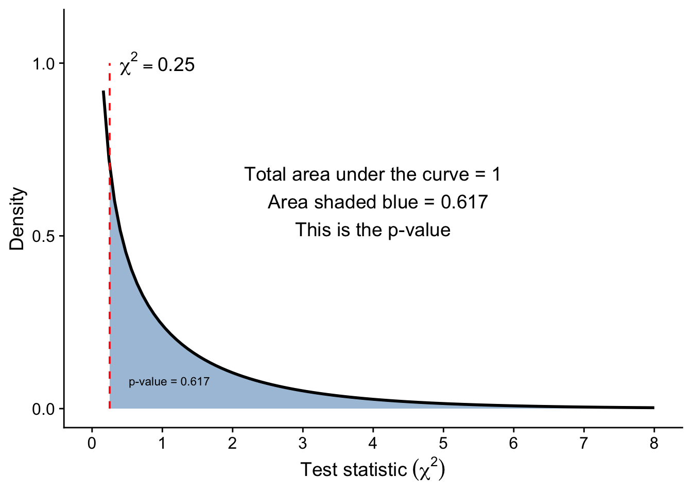

5 Hardy-Weinberg example
Suppose hedgehogs have a gene for spine colouration that has two alleles, A and a. Let allele A be dominant and give dark coloured spines, while allele a is recessive and gives light coloured spines.
Hence there are two phenotypes - hedgehogs with dark spines and hedgehogs with light coloured spines.
A sample of N = 50 hedgehogs is gathered, through arrivals at a local rescue centre. Of these it is found that 39 have dark spines and 11 have light spines.
What about the genotypes of these hedgehogs? Given that there are two alleles of this gene, and that each individual has two copies of the allele, three genotypes are possible: Homozygous AA, heterozygous Aa and homozygous aa. Further, the total number of alleles in the sample must be 2* N = 100
We know that the hedgehogs with light coloured spines must be homozygous in the recessive allele aa. If they had even a single copy of the dominant A allele, they would have dark coloured spines.
The 39 dark coloured hedgehogs must have genotype AA or Aa, but we cannot tell from simple observation how many of each there are among all 39.
To determine the genotype numbers among the dark hedgehogs, we send genetic material away to a genetic sequencing lab.They tell us that there are 16 homozygous AA hedgehogs and 23 heterozygous Aa hedgehogs. We know already that the other 11 hedgehogs, the ones that have light coloured spines, are of genotype aa, the only psossibl other genotype. So, in summary, our populations consists of
| Genotype | Phenotype | Frequency |
|---|---|---|
| AA | dark | 16 |
| Aa | dark | 23 |
| aa | light | 11 |
5.1 Allele proportions p and q
Nor do we know how many alleles of type A there are, and how many of type a there are among the total of 100 alleles altogether. We will find it more useful to think anyway not of the number of A or of a alleles in the sample, but of the proportion of all of them that are A and the proportion that are a. Following convention, we will use p to denote the proportion of all the alleles that is the dominant one, A in this case, and q to denote the proportion of all alleles that are the recessive allele (a, in this case). Since every allele is either A or a, we know that the two proportions must add up to 1:
\[p+q = 1\]
To determine each of p and q, we need to divide the total number of A alleles by the total number of alleles of either type. This latter number, we know, is 2N = 100, since each hedgehog has two alleles, either AA, Aa or aa. To determine the number of A alleles, we recall that each dark hedgehog that is homozygous AA will have two of these, while each hedgehog that is heterozygous Aa will have one. Thus,
\[ \begin{align*} p&=\frac{\text{Total number of A alleles}}{\text{Total number of alleles}}\\ &=\frac{2 AA + Aa}{2N}\\ &=\frac{2\times 16 + 23}{2\times 50}\\ &=\frac{55}{100}\\ &=0.55 \end{align*} \]
where, here, AA denotes the number of individuals with genotype AA, Aa the number with genotype Aa and aa the number with genotype aa. A similar calculation for the a allele yields:
\[ \begin{align*} q&=\frac{\text{Total number of a alleles}}{\text{Total number of alleles}}\\ &=\frac{2 aa + Aa}{2N}\\ &=\frac{2\times 11 + 23}{2\times 50}\\ &=\frac{45}{100}\\ &=0.45 \end{align*} \] We note that our values for p and q do add up to one, as they should..
5.2 Hardy-Weinberg expected values for the genotype numbers
So far, all the numbers observed or calculated are true for this population of hedgehogs, whether that is the number of each phenotype or genotype, or the allele propotions p and q.
Now we calculate the genotype numbers we would expect if the Hardy-Weinberg assumptions hold. To imagine what this means, it helps here to think of the population of hedgehogs as arising from two big bags, one full of N male gametes, the other full of N female gametes. Each of the gametes will contain one copy of the chromosome on which our gene for spine colour sits (and also one copy of all the other chromosomes, but we can ignore them here). A proportion p of these gametes will have the A allele for our gene and a proportion q will have the a allele. This is true overall, and if the population is very large (another Hardy-Weinberg assumption) this will be separately true for both the female and the male gametes. Each hedgehog arises from the union of one female and one male gamete. Under the Hardy-Weinberg assumption of random mating throughout the population, each of these gametes is chosen randomly from its respective bag. The probability that any female gamete drawn from its bag has allele A is p. The same is true for the male gamete. Hence the probability that a hedgehog in our population has genotype AA is p2. Hence the proportion of the population that we can expect to have this genotype is also p2, and hence too, the number of hedgehogs we would expect to have this genotype is this proportion multiplied by the total size N of the population.
Hence, if the Hardy-Weinberg assumptions hold, we would expect to have N x p2 = 50 x 0.55 x 0.55 = 15.125 homozygous AA hedgehogs.
Meaning of the term ‘expected’
Note the usage of the word expected. Just because we say we expect 15.1 homozygous AA hedgehogs, that does not mean we would necessarily get exactly that many (even if fractional hedgehogs were possible!) even if the Hardy-Weinberg assumptions were met. It works probablistically. If a proportion p of the gametes of each sex contain allele A, then the probability that an individual hedgehog will have genotype AA is p2 = 0.303, assuming the H-W assumptions apply. In an infinitely large population of hedgehogs, the proportion that actually had that genotype would also be p2, but in a finate population, especially one that was small, there would very likely be deviation eiather side of this expected proportion. In the same way, if we had a fair coin, we would expect to get heads roughly 50% 0f the time if we tossed it a million or a squillion times, but would not be phased if we got a number slightly different from that when we tossed it a few times. Each toss could go either way.
The thing is, how far off the expected number of AA alleles, coin tosses that turned up heads or whatever can we get in our observed numbers before we can no longer credibly hold on to our belief that the hedgehogs are in Hardy-Weinberg equilibrium or that the coin is not fair?
That is what we turn to next.
The expected number of homozygous aa individuals would likewise be N x q2 = 50 x 0.45 x 0.45 = 10.125
Heterozygous individuals can be formed by getting an A allele from the male gamete and an a allele from the female gamete, or the reverse. Either way, the probability of that happening if Hardy-Weinberg holds and the gametes are selected randomly from their respective bags is pq, so that the total probability of an individual being heterozygous is 2 pq and thus the expected number of heterozygous individuals would be N x 2 pq = 50 x 2 x 0.55 x 0.45 = 24.75
Arithmetic check
Check that sum of the expected numbers of the three genotypes is equal to the populations size N = 50.
5.3 Compare observed with expected numbers
So now we have our expected numbers E for the three genotypes, if the population is in Hardy-Weiberg equilibrium, that we can compare with the actual observed numbers O:
| Genotype | Phenotype | Observed number O | Expected number E |
|---|---|---|---|
| AA | dark | 16 | 15.125 |
| Aa | dark | 23 | 24.75 |
| aa | light | 11 | 10.125 |
The observed and the expected numbers for each genotype are not exactly equal, but we shoud not be surprised by that. Are they, though, so far apart that we can no longer credibly believe that this hedgehog population is in Hardy-Weinberg equilibrium for the gene for spine colouration?
To find out, we need to use a Chi-Square Goodness of Fit Test.
5.4 Chi-Square Goodness of Fit Test
The idea of this test is, first, to create a measure, the so-called chi-square statistic, of how far the observed genotype numbers are from the expected numbers, under a null hypothesis that the Hardy-Weinberg conditions are met and, second, to determine how likely it is that that difference would be as large as it is, or larger, if the null hypothesis were true.
Let us calculate the Chi-square statistic, denoted as \(\chi^2\). To do this we take the difference betwen the observed and expected number for each of the genotypes, we square this difference and then we divide by the expected number for the genotype. Then we add all these terms together:
\[ \begin{align*} \chi^2 &= {\frac{(O-E)^2}{E}}_\text{AA} + {\frac{(O-E)^2}{E}}_\text{Aa} + {\frac{(O-E)^2}{E}}_\text{aa}\\ &=\frac{(16-15.125)^2}{15.125} +\frac{(23-24.75)^2}{24.75} + \frac{(11-10.125)^2}{10.125}\\ &= 0.0506 + 0.124 + 0.076\\ &= 0.250 \end{align*}\\ \] Note that this expression for \(\chi^2\) is indeed a measure of how far the observed values differ from the expected numbers, under the null of HW being true for this case. The more the observed values differ from the expected values, the bigger \(\chi^2\) becomes. If they were exactly equal to the expected values then \(\chi^2\) would be equal to zero. Note too that \(\chi^2\) can never be zero, since it is the sum of terms that must each be positive.
This \(\chi^2\) follows a distribution, known as a \(\chi^2\) distribution for (in this case) 1 degree of freedom. It is plotted below in Figure 5.1 as a ‘probability density function’. You may have met one of these before, for the normal distribution. The way to understand it is that the area under the curve between and two values of \(\chi^2\) on the x-axis gives the probability of \(\chi^2\) being in that range. In particular, the area under the curve to the right of a given value of \(\chi^2\) gives the probability that \(\chi^2\) would have that value, or greater. This probability is the famous p-value: the probability of gettng data as different from the null prediction as ours is, or more different, if the null were true. In this case that means the probability of getting a \(\chi^2\) value, as big or bigger than the one we got.
Degrees of freedom
You see the term ‘degrees of freedom’ a lot in statistics. It refers to the number of independent ways that the data can deviate from the null. This opaque phrase translates as: the number of free dimensions in the observed data minus the number of free parameters fitted under the null.
tldr: In Hardy-Weinberg problms such as this, with two alleles and threee genotypes, there is one degree of freedom.
Let us consider the residual numbers for each genotype - that is, the difference O-E, for each genotype, between the observed and expected numbers.
There are three residuals, one for each genotype - so our ‘free dimension’ number is three
However, these residulas must satisfy two constraints:
- They sum to zero, because both sets of counts sum to N: \(O_{AA} + O_{Aa} + O_{aa} - E_{AA} +E_{Aa} +E{aa} = 0\)
- Because, from the observed allele counts, the observed and expected counts of A alleles agree exactly: \(2(O_{AA} − E_{AA} + (O_{Aa} − E_{Aa}) = 0\)
Three residuals with two constraints leave one free residual, hence 1 df.
For our date, we find \(\chi^2\) = 0.25. The area under a \(\chi^2\) curve for two degrees of freedom, to the right of this value of \(\chi^2\) is 0.617. We call this value the p-value of the the \(\chi^2\) test: the probability of getting a \(\chi^2\) value this big or bigger if the null were true. I’ll repeat, this is the same thing as the probability of getting observed values as far or further from the expected values as oours were, if the null (Hardy-Winberg holds) were true.
5.5 Conclusion
The p-value we get is 0.617. Remember that p is a probability, os can only have values in the range 0 to 1. Our p-value is (much) bigger than 0.05, the commonly used threshold (known as the significance level) for deciding whether or not to reject a null hypothesis. If p is less than the chosen signficance level, we reject the null. If it isn’t we do not reject the null. Here, p is much bigger than 0.05 so we emphatically do not reject the null. It is very likely that we could have got genotype numbers as different as ours from the expected numbers predicted by Hardy-Weinberg equilibrium, even if all the assumptions of Hardy-Weinberg equlibrium are met.
Thus our observations are consistent with Hardy-Weinberg. We find no evidence from the data that the hedgehog population is not in Hardy-Weinberg equilibrium for the spine colouration gene. That doesn’t mean that it definitely is in H-W equilibrium. It just means we have no evidence from this data that it isn’t.
In the same way, if we tossed a coin 100 times and got 48 heads and 52 tails, that would not constitute evidence that the coin is not fair (that is, one for which heads and tails are equally likely) despite that we didn’t get exactly the expected results of 50 heads and 50 tails. If the coin is fair the probability of getting 48 or fewer heads and 52 or more tails turns out to be 0.76, so getting the results we got is quite likely even if the coin is fair. On the other hand, if we got 30 heads and 70 tails, the probability of that is very, very small with a fair coin, so we would reject the null and decide that the coin is not fair.
So, don’t imagine that Hardy-Weinberg is not satisfied just because the observed numbers of the different genotypes are not exactly the same as the expected values. The question is, by how much do they differ, and how likely would that be if Hardy-Weinberg holds. A chi-square analysis tells you that.
5.6 Doing the chi-square analysis using R - optional
To actually calculate the \(\chi^2\) statistic and p-value in a Hardy-Weinberg problem we would now almost always use software. Here is one way to do it using R.
For this to work, you will need to have installed R and RStudio. Then, open RStudio.
In the console pane (bottom left of the RStudio window) we can type in the following code, one line at a time. Don’t bother with the comments, which are those lines that begin with a # symbol.
# observed counts
observed <- c(AA = 16, Aa = 23, aa = 11)
N <- sum(observed)
# allele frequencies
p <- (2 * observed["AA"] + observed["Aa"]) / (2 * N)
q <- 1 - p
# expected counts
expected <- N * c(p^2, 2 * p * q, q^2)
# calculate chi-squared (X2 )statistic
X2 <- sum((observed - expected)^2 / expected)
# calculate p-value
pchisq(X2, df = 1, lower.tail = FALSE)[1] 0.617